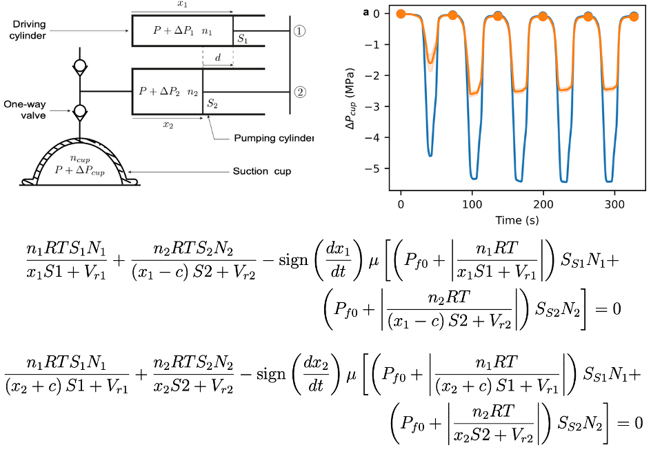
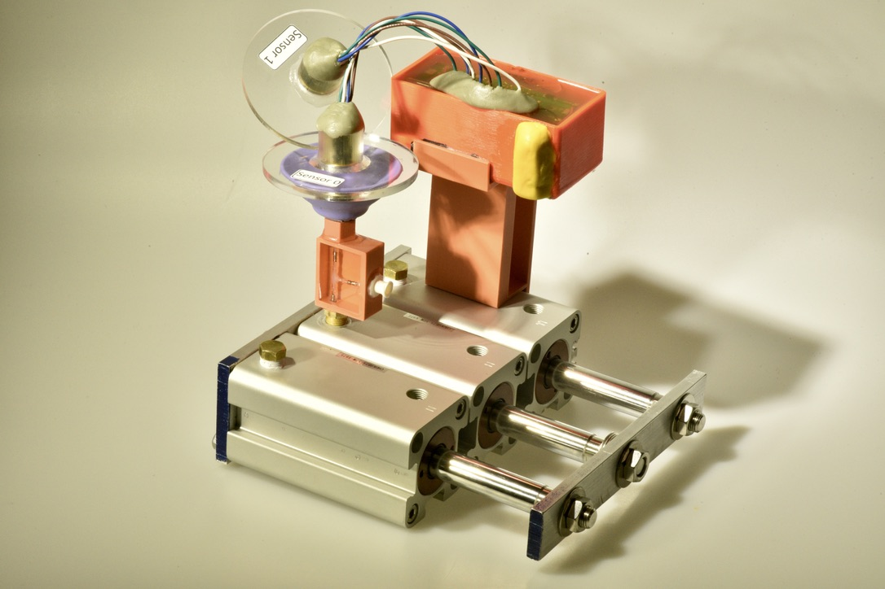
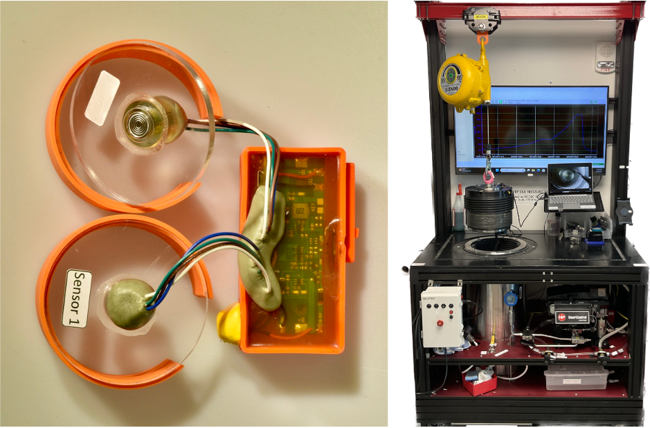
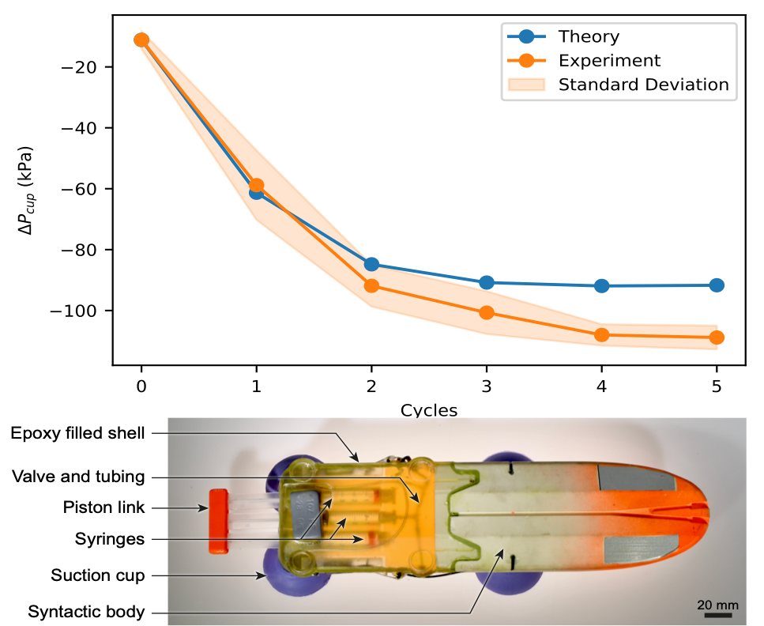

Modeling and optimization
- Thermodynamic model of the pump.
- Design optimization with a genetic algorithm.

Harvard Microrobotics Laboratory - Master thesis and research fellowship
Project CETI aims to decode whale communication using non-invasive tags attached to whales to record their vocalizations. The suction cups used for attachment are safe but limit attachment time, which directly constrains the amount of data that can be collected.




First-author paper in IEEE Journal of Oceanic Engineering, 2025 - DOI: 10.1109/JOE.2025.3595607